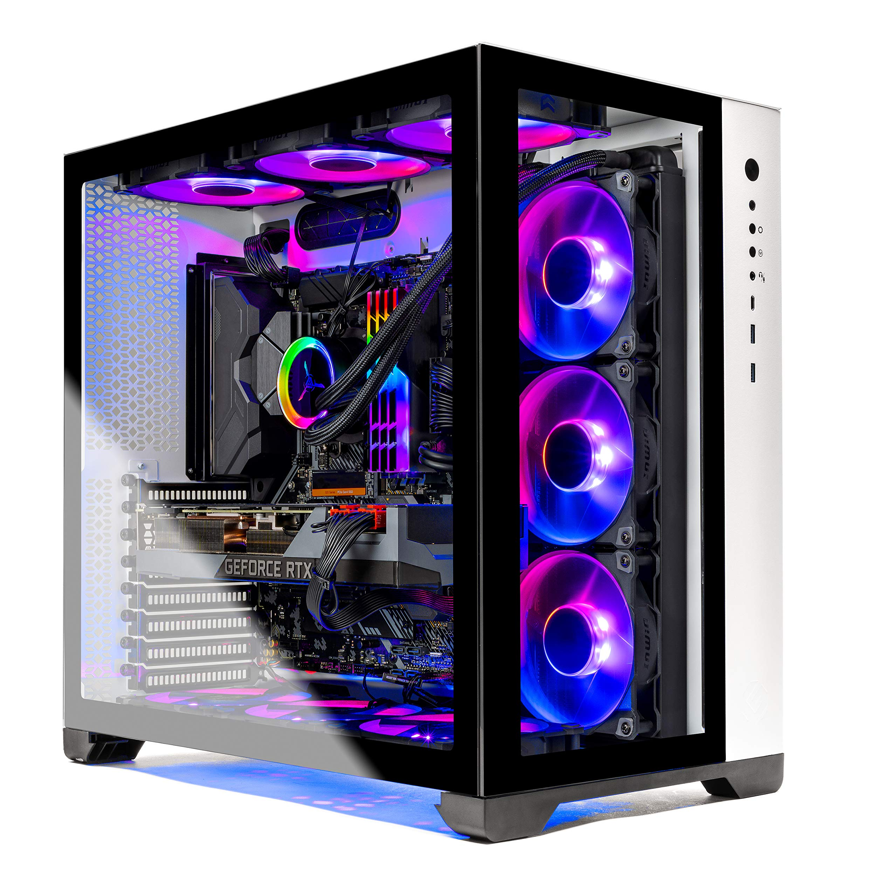

Lab Computer
This is my computer that I built for our Foundation of Computer Systems class. For me personally, it was the first computer that I built sucessfully. We were given a $550 budget to build it so I had to go cheap on some parts.
- Hardware Included:
- CPU: Ryzen 5600G
- GPU: MSI GTX 1050
- RAM: 8GB
- Storage: 500GB M.2 SSD
My personal computer
After my first year of college, I saved up enough money throughout the year and bought parts to put together my own system. After taking it very slow, I was able to get a sucessful boot on the first power up.
- Hardware Overview:
- CPU: Ryzen 5600x
- GPU: EVGA RTX 3080ti
- RAM: 32GB (2 x 16GB)
- Storage: 2TB M.2 SSD & 1TB M.2 SSD
Minerial Oil Computer
For my senior project, I decided to do a minerial oil submerged computer. I even decided that I was going to stick it inside of fish tank. Although it is not a necessity to stick a computer in minerial oil it is a great project if you want a computer that is more unique than others.